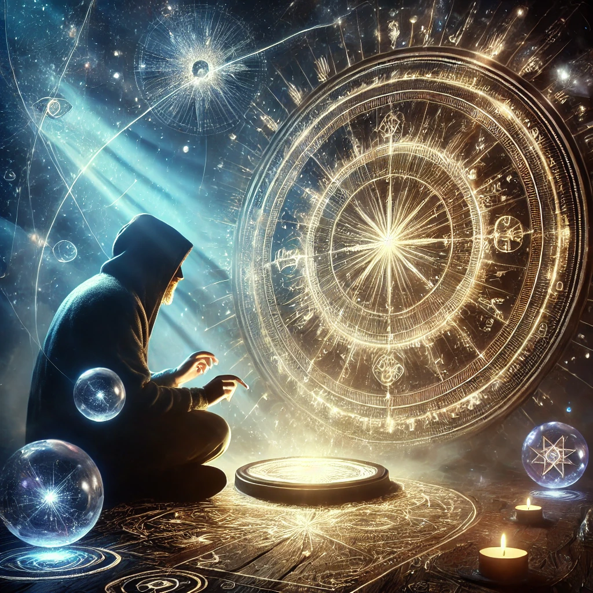

You sit cross-legged with the compass resting in your lap. The glowing glyphs pulse faintly, as though alive, beckoning you to understand their secrets. As you focus on their intricate patterns, your mind begins to shift—fragments of knowledge from deep within start to surface.
Each glyph feels like a piece of a puzzle, connected to something larger. Visions flood your mind: a spiraling galaxy, threads of light weaving through infinite space, and a cosmic balance of light and shadow. The glyphs whisper to you in a language that transcends words:
“We are the keys to the infinite. To understand us is to understand yourself. Look deeper, beyond what you see.”
Your connection to the glyphs deepens, and you feel their energy resonate with your own. New choices begin to form as you unlock their meaning.

What will you focus on next?